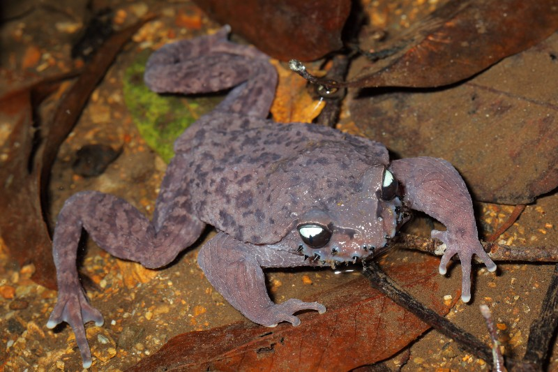

📇
基础名片
Basic Info
哀牢髭蟾
学名：Leptobrachium ailaonicum ，别名：胡子蛙、毛胡子
地位：哀牢山 — 无量山生态区的关键指示物种，中国特有珍稀两栖动物
保护级别：国家二级保护野生动物、近危（NT）
学名：Leptobrachium ailaonicum ，别名：胡子蛙、毛胡子
地位：哀牢山 — 无量山生态区的关键指示物种，中国特有珍稀两栖动物
保护级别：国家二级保护野生动物、近危（NT）
✨
外形特征
Morphology
外形特征
大型蟾类,雄蟾体长 69~88mm，雌蟾 67~79mm，雄略大于雌
头部宽扁，吻棱明显,瞳孔纵置，眼球上半浅蓝、下半黄褐色，极为独特
标志性 “胡子”是指繁殖期雄蟾上唇缘长有 10~24 枚黑色锥状角质婚刺（非繁殖期脱落），雌蟾无刺
大型蟾类,雄蟾体长 69~88mm，雌蟾 67~79mm，雄略大于雌
头部宽扁，吻棱明显,瞳孔纵置，眼球上半浅蓝、下半黄褐色，极为独特
标志性 “胡子”是指繁殖期雄蟾上唇缘长有 10~24 枚黑色锥状角质婚刺（非繁殖期脱落），雌蟾无刺
🌍
分布与栖息
Habitat
分布与栖息
国内仅存于云南哀牢山、无量山，如景东、双柏、新平、屏边等地
栖息于海拔800~2500m的常绿阔叶林内
喜居山溪、缓流附近的潮湿石缝、落叶层中，对水质与植被要求极高
国内仅存于云南哀牢山、无量山，如景东、双柏、新平、屏边等地
栖息于海拔800~2500m的常绿阔叶林内
喜居山溪、缓流附近的潮湿石缝、落叶层中，对水质与植被要求极高
🍃
习性与繁殖
habits
习性与繁殖
非繁殖期在陆地森林底层活动，繁殖期才进入水中
食性：捕食昆虫、小型无脊椎动物
繁殖：繁殖期每年2~4月（冬末春初），雌蟾将乳白色卵团粘附于溪流石块下方，雄蟾留守巢中，守护卵群直至孵化
非繁殖期在陆地森林底层活动，繁殖期才进入水中
食性：捕食昆虫、小型无脊椎动物
繁殖：繁殖期每年2~4月（冬末春初），雌蟾将乳白色卵团粘附于溪流石块下方，雄蟾留守巢中，守护卵群直至孵化
🛡️
保护现状与措施
measure
保护现状与措施
全球野生约2000~3000只，中国占95%以上
保护：就地保护、生态修复、定期开展种群调查
威胁：分布区极狭窄、栖息地破碎化、种群数量稀少、受天敌及人为捕捉
全球野生约2000~3000只，中国占95%以上
保护：就地保护、生态修复、定期开展种群调查
威胁：分布区极狭窄、栖息地破碎化、种群数量稀少、受天敌及人为捕捉

哀牢髭蟾种群数量变化监测
哀牢髭蟾种群数量增长趋势